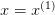
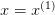

![v = [v1,v2,⋅⋅⋅,vn]T](main1435x.png)
Considere primeiramente uma função f : ℝn → ℝ, ou seja, uma função que mapeia n variáveis reais em um único real, por exemplo:
Para construirmos a linearização, fixemos uma direção no espaço ℝn, ou seja um vetor v:
Queremos estudar como a função f(x) varia quando “andamos” na direção v a
partir do ponto x(0). Para tal, inserimos um parâmetro real pequeno h, dizemos
que


A linearização de g(h) em torno de h = 0 é dada por


Observamos que xj = xj(0) + hv j, portanto

Na notação cálculo vetorial escrevemos este produto interno como ∇f ⋅ v = v ⋅∇f
na notação de produto matricial, escrevemos  T v = vT ∇f. Esta quantidade é
conhecida como derivada direcional de f no ponto x(0) na direção v, sobretudo
quando ∥v∥ = 1.
T v = vT ∇f. Esta quantidade é
conhecida como derivada direcional de f no ponto x(0) na direção v, sobretudo
quando ∥v∥ = 1.
Podemos escrever a linearização g(h) = g(0) + hg′(0) + O(h2) como
Finalmente, escrevemos x = x(0) + hv, ou seja, hv = x - x(0)


Observação 5.2.1. Observe a semelhança com a linearização no caso em uma dimensão. A notação ∇T f(x(0)) é o transposto do vetor gradiente associado à função f(x) no ponto x(0):

Interessamo-nos, agora, pela linearização da função F : ℝn → ℝn. Lembramos que F(x) pode ser escrita como um vetor de funções fj : ℝ⋉ → ℝ:
 

|
Linearizando cada uma das funções fj, temos:


Podemos escrever a linearização de F(x) na seguinte forma mais enxuta:

A matriz jacobiana JF é matriz cujas linhas são os gradientes transpostos de fj, ou seja: